<title>Convergence Mark</title>
<meta name="claude:viewport-fit-sides" content="cover">
<link rel="stylesheet" href="https://fonts.googleapis.com/css2?family=IBM+Plex+Mono:wght@400;600&family=IBM+Plex+Sans+Condensed:wght@500;600;700&family=Source+Serif+4:opsz,wght@8..60,400&display=swap">
<style>
/* Layout: a spec sheet in one column; the mark, its construction, the two cuts, the lockups, the rules, the files. */
:root {
  --bg: #ece6d6; --fg: #1f241f; --dim: #4d534c; --rule: #c9bfa5; --guide: #b8392e;
  --dark: #0d100f; --dark-ink: #e7e3d8; --dark-edge: #2a302d;
  --paper: #e8e1cf; --paper-edge: #c9bfa5; --ink: #1f241f;
  --cond: "IBM Plex Sans Condensed", "Arial Narrow", sans-serif;
  --mono: "IBM Plex Mono", Consolas, monospace;
  --serif: "Source Serif 4", Georgia, serif;
}
@media (prefers-color-scheme: dark) { :root:not([data-theme="light"]) { --bg: #0d100f; --fg: #e7e3d8; --dim: #a9a79c; --rule: #2a302d; color-scheme: dark; } }
:root[data-theme="dark"] { --bg: #0d100f; --fg: #e7e3d8; --dim: #a9a79c; --rule: #2a302d; color-scheme: dark; }
* { box-sizing: border-box; }
body { margin: 0; background: var(--bg); color: var(--fg); font-family: var(--serif); font-size: 1.05rem; line-height: 1.5;
  padding-block: 2.5rem 4rem; padding-left: max(16px, env(safe-area-inset-left, 0px)); padding-right: max(16px, env(safe-area-inset-right, 0px)); }
main { max-width: 1120px; margin: 0 auto; display: grid; gap: 3.2rem; }
h1, h2, h3 { font-family: var(--cond); font-weight: 600; line-height: 1.05; margin: 0; text-wrap: balance; }
h1 { font-size: clamp(2rem, 4vw, 2.8rem); }
h2 { font-size: 1.7rem; }
h3 { font-size: 1.15rem; }
p { margin: 0; max-width: 62ch; }
p.dim, .dim { color: var(--dim); }
section { display: grid; gap: 1.1rem; border-top: 1px solid var(--rule); padding-top: 1.6rem; }
section.hero { border-top: 0; padding-top: 0; }
.row { display: grid; grid-template-columns: repeat(auto-fit, minmax(300px, 1fr)); gap: 1rem; }
.surface { padding: 1.6rem; display: flex; flex-direction: column; gap: 1.2rem; min-width: 0; align-items: flex-start; }
.surface.dark { background: var(--dark); color: var(--dark-ink); }
.surface.paper { background: var(--paper); color: var(--ink); }
.surface.center { align-items: center; justify-content: center; }
.surface img { max-width: 100%; height: auto; display: block; }
.cap { font-family: var(--mono); font-size: 0.68rem; letter-spacing: 0.12em; text-transform: uppercase; color: var(--dim); }
.surface .cap { color: inherit; opacity: 0.6; }
.sizes { display: flex; align-items: flex-end; gap: 1.4rem; flex-wrap: wrap; }
.sizes figure { margin: 0; display: grid; justify-items: center; gap: 0.4rem; }
.sizes figcaption { font-family: var(--mono); font-size: 0.66rem; letter-spacing: 0.1em; opacity: 0.6; }
.sizes img { image-rendering: auto; }
.tab { display: inline-flex; align-items: center; gap: 0.45rem; border: 1px solid var(--dark-edge); background: #202523; color: #d7d4c8; border-radius: 8px 8px 0 0; padding: 0.35rem 0.8rem; font: 0.8rem system-ui, sans-serif; }
.surface.paper .tab { border-color: var(--paper-edge); background: #f3eee2; color: #333; }
.tab img { width: 16px; height: 16px; }
.rules { display: grid; grid-template-columns: repeat(auto-fit, minmax(260px, 1fr)); gap: 1.2rem 2rem; }
.rules div { display: grid; gap: 0.3rem; }
.rules p { font-size: 0.98rem; color: var(--dim); }
.files { font-family: var(--mono); font-size: 0.8rem; line-height: 1.7; columns: 2; column-gap: 2rem; max-width: 60rem; }
.files span { display: block; break-inside: avoid; }
.notice { position: relative; display: inline-grid; gap: 0.2rem; padding: 1.5rem 1.4rem 1rem; background: #ece6d6; color: #1f241f; transform: rotate(-0.6deg); box-shadow: 0 6px 14px rgb(0 0 0 / 0.3); }
.notice svg { position: absolute; top: -10px; width: 22px; height: 44px; }
.notice .t { font-family: var(--cond); font-weight: 600; font-size: 1.55rem; letter-spacing: 0.035em; text-transform: uppercase; line-height: 1; white-space: nowrap; }
.notice .s { font-family: var(--mono); font-weight: 600; font-size: 0.66rem; letter-spacing: 0.18em; text-transform: uppercase; opacity: 0.72; }
.construct { width: min(100%, 420px); }
@media (max-width: 560px) { .notice .t { font-size: 1.2rem; } .files { columns: 1; } }
</style>

<svg width="0" height="0" style="position:absolute" aria-hidden="true"><defs>
  <g id="pin"><path d="M-11 3a3 3 0 0 1 3-3h16a3 3 0 0 1 3 3v7h-5l-2 9h-8l-2-9h-5z"/><path d="M-1.1 19h2.2v22.5L0 45l-1.1-3.5z"/></g>
</defs></svg>

<main>
  <section class="hero">
    <h1>The convergence mark</h1>
    <p class="dim">Three pins driven into one hole from three directions. One board, one point, three hands on it. The pins are identical and share one ink, so no presidency is drawn larger, first, or in colour. The silhouette is a triangle on its point, which is what survives at sixteen pixels.</p>
    <div class="row">
      <div class="surface dark center"></div>
      <div class="surface paper center"></div>
    </div>
  </section>

  <section>
    <h2>Construction</h2>
    <p class="dim">One pin glyph, reused three times. The side pins rotate 26 degrees about the shared tip, the centre pin sits in front with a halo in the board colour so the three heads stay separate where they overlap. The tip is on the vertical axis, two units below centre of the box, which centres the mass optically. Clear space around the mark is one head width on every side.</p>
    <div class="row">
      <div class="surface paper center">
        <svg class="construct" viewBox="-20 -8 140 124" aria-label="Construction drawing">
          <rect x="0" y="0" width="100" height="100" fill="none" stroke="var(--guide)" stroke-width="0.5" stroke-dasharray="2 2"/>
          <rect x="-22" y="-22" width="144" height="144" fill="none" stroke="var(--guide)" stroke-width="0.4" stroke-dasharray="1 2" opacity="0.7"/>
          <line x1="50" y1="-4" x2="50" y2="104" stroke="var(--guide)" stroke-width="0.4"/>
          <line x1="-4" y1="50" x2="104" y2="50" stroke="var(--guide)" stroke-width="0.4"/>
          <g fill="#1f241f">
            <g transform="translate(50 80) rotate(-26) translate(0 -45)"><use href="#pin"/></g>
            <g transform="translate(50 80) rotate(26) translate(0 -45)"><use href="#pin"/></g>
            <g transform="translate(50 80) translate(0 -45)" fill="#e8e1cf" stroke="#e8e1cf" stroke-width="5" stroke-linejoin="round"><use href="#pin"/></g>
            <g transform="translate(50 80) translate(0 -45)"><use href="#pin"/></g>
          </g>
          <path d="M50 80 L50 40" stroke="var(--guide)" stroke-width="0.5" stroke-dasharray="1.5 1.5"/>
          <path d="M50 80 L32.5 44" stroke="var(--guide)" stroke-width="0.5" stroke-dasharray="1.5 1.5"/>
          <path d="M50 54 A26 26 0 0 0 38.6 56.6" fill="none" stroke="var(--guide)" stroke-width="0.6"/>
          <text x="40" y="52" font-family="IBM Plex Mono, monospace" font-size="4.2" fill="var(--guide)">26°</text>
          <circle cx="50" cy="80" r="1.6" fill="none" stroke="var(--guide)" stroke-width="0.5"/>
          <text x="54" y="82" font-family="IBM Plex Mono, monospace" font-size="4.2" fill="var(--guide)">one hole</text>
          <text x="-20" y="-11" font-family="IBM Plex Mono, monospace" font-size="4.2" fill="var(--guide)">clear space = one head width</text>
        </svg>
      </div>
      <div class="surface paper">
        <h3>Two cuts</h3>
        <p class="dim" style="font-size:0.98rem">The display cut has a fine needle and is used from 64 pixels up. The small cut thickens the needle and the collar so the three stems still show at 48 pixels and under; the favicon and the smallest icon sizes use it. Same angles, same hole.</p>
        <div class="sizes" style="margin-top:0.4rem">
          <figure><figcaption>display</figcaption></figure>
          <figure>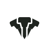<figcaption>small</figcaption></figure>
        </div>
      </div>
    </div>
  </section>

  <section>
    <h2>Sizes</h2>
    <p class="dim">The rasterised app icon at every size the installer and the OS ask for, each from the right cut. The tab shows the favicon, which follows the browser's light or dark theme on its own.</p>
    <div class="row">
      <div class="surface dark">
        <div class="sizes">
          <figure><span class="tab">A War Without Victory</span><figcaption>tab</figcaption></figure>
          <figure>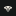<figcaption>16</figcaption></figure>
          <figure>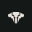<figcaption>32</figcaption></figure>
          <figure><figcaption>48</figcaption></figure>
          <figure>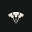<figcaption>64</figcaption></figure>
          <figure>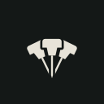<figcaption>128</figcaption></figure>
          <figure>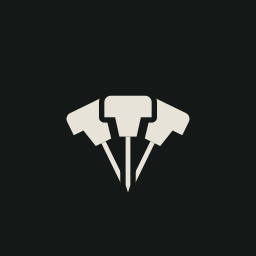<figcaption>256, as the OS rounds it</figcaption></figure>
        </div>
      </div>
      <div class="surface paper">
        <div class="sizes">
          <figure><span class="tab">A War Without Victory</span><figcaption>tab</figcaption></figure>
          <figure><figcaption>16</figcaption></figure>
          <figure><figcaption>32</figcaption></figure>
          <figure><figcaption>48</figcaption></figure>
          <figure><figcaption>64</figcaption></figure>
          <figure><figcaption>128</figcaption></figure>
        </div>
      </div>
    </div>
  </section>

  <section>
    <h2>Lockups</h2>
    <p class="dim">The wordmark is the title screen's own setting: Plex Sans Condensed SemiBold, uppercase, tracked, over a Plex Mono line. Horizontal for headers and the press kit, stacked for the title screen, posters and the social card. Both come as SVG with the fonts embedded and as 3x PNG on each surface.</p>
    <div class="row">
      <div class="surface paper center">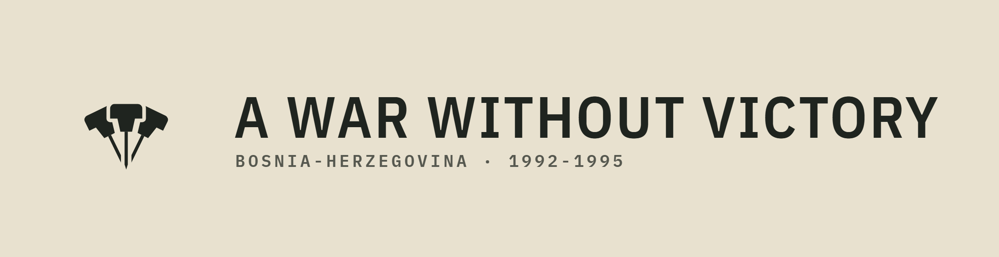<span class="cap">horizontal, paper</span></div>
      <div class="surface dark center">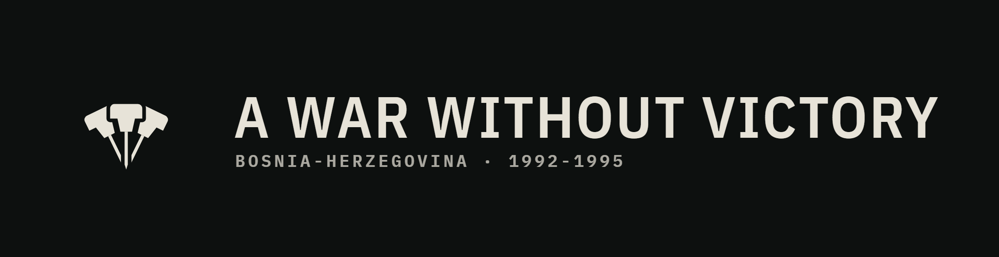<span class="cap">horizontal, dark</span></div>
      <div class="surface paper center">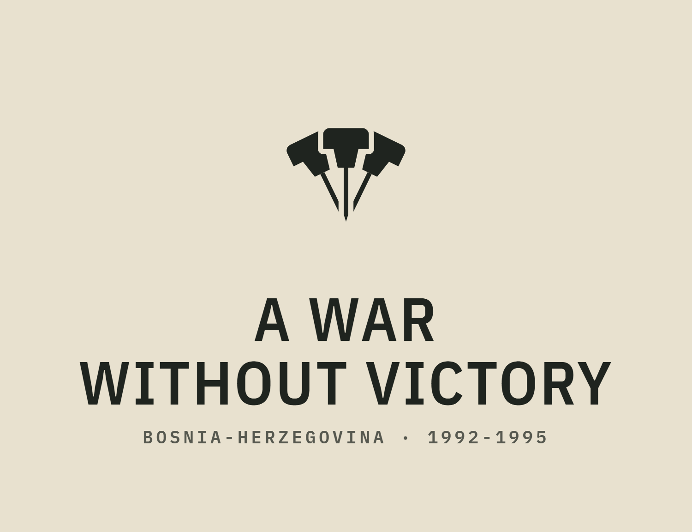<span class="cap">stacked, paper</span></div>
      <div class="surface dark center">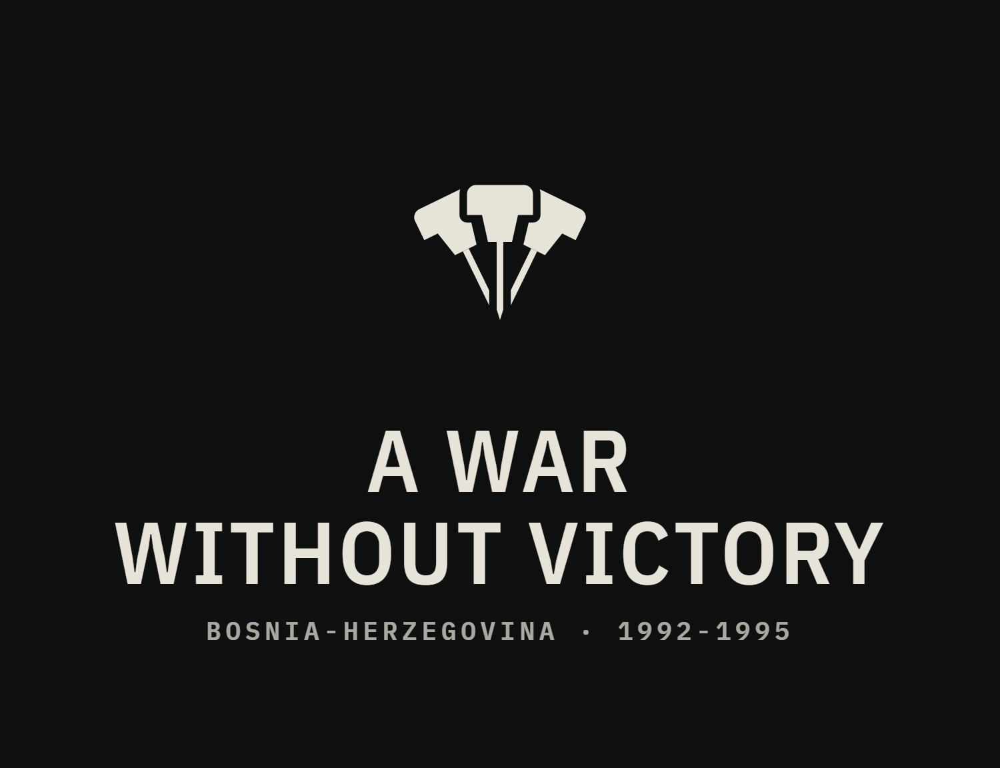<span class="cap">stacked, dark</span></div>
    </div>
  </section>

  <section>
    <h2>The pinned notice</h2>
    <p class="dim">Where the title appears at full size on a scene, the site header over the hero and the title-screen masthead, the wordmark sits on a slip of paper held to the board by the three pins. The mark alone stays the three pins; the notice is the lockup in its own world.</p>
    <div class="row">
      <div class="surface dark"><div class="notice"><svg style="left:14px" viewBox="-11 0 22 45"><use href="#pin" fill="#1f241f"/></svg><svg style="left:50%;margin-left:-11px" viewBox="-11 0 22 45"><use href="#pin" fill="#1f241f"/></svg><svg style="right:14px" viewBox="-11 0 22 45"><use href="#pin" fill="#1f241f"/></svg><div class="t">A War Without Victory</div><div class="s">Bosnia-Herzegovina · 1992-1995</div></div></div>
    </div>
  </section>

  <section>
    <h2>Rules</h2>
    <div class="rules">
      <div><h3>One ink</h3><p>The three pins are always the same colour: ink on paper, paper on dark. Never colour a pin, never colour one differently. Three colours would be three flags.</p></div>
      <div><h3>Two surfaces</h3><p>Ink #1f241f on paper #e8e1cf, or light #e7e3d8 on dark #0d100f. On a photograph, put the mark on a tile of one of these surfaces rather than straight onto the image.</p></div>
      <div><h3>Minimum size</h3><p>Display cut from 64 pixels or 18 millimetres. Small cut below that, down to 16 pixels. Nothing smaller than 16; use the wordmark alone instead.</p></div>
      <div><h3>Clear space</h3><p>One head width on every side, measured from the mark's bounding box. Nothing else, including the wordmark, enters that space except in the two lockups shown here.</p></div>
      <div><h3>Do not</h3><p>Do not add a map, a flag, a border, a wreath or a star. Do not rotate the mark, outline it, add a gradient or a shadow, or redraw the pins with round heads.</p></div>
      <div><h3>Where it goes</h3><p>Site favicon and header, social card, press kit, title-screen masthead, pause menu, the Electron app icon and installer, and the end-of-war recap. The current laurel, the plain-text header and the pixel mountain icon are all retired by it.</p></div>
    </div>
  </section>

  <section>
    <h2>Files</h2>
    <p class="dim">Masters are in the game repo under docs/50_launch/marketing/logo/convergence. SVG lockups embed the two typefaces, so they open correctly anywhere.</p>
    <div class="files">
      <span>awwv-mark.svg</span><span>awwv-mark-light.svg</span><span>awwv-mark-small.svg</span><span>awwv-mark-small-light.svg</span><span>favicon.svg</span><span>awwv-app-icon.svg</span>
      <span>awwv-app-icon-16 … 512.png</span><span>awwv-lockup-horizontal.svg</span><span>awwv-lockup-horizontal-light.svg</span><span>awwv-lockup-stacked.svg</span><span>awwv-lockup-stacked-light.svg</span><span>awwv-lockup-*-paper@3x.png, -dark@3x.png</span>
    </div>
  </section>
</main>
